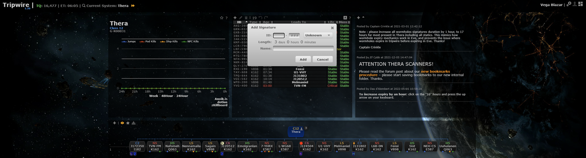
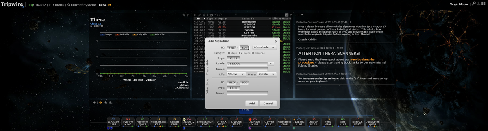

Archive:Thera Scanning Original Guide
NOTE: This page contains potentially outdated information and has been preserved for historical use only as part of the Signal Cartel Archive.
The Original Guide is our older Thera Scanning guide and describes a still valid, but more manual method of Thera Scanning. While reading this guide prior to Thera Scanning is highly encouraged as it discusses the nuances and intricacies of the process, please first refer to the Quick Start Guide for the most up-to-date method of Thera Scanning.
The target audience of this guide is players who want to participate in our Thera Scanning Endeavor. Public Thera bookmark management instructions are not included.
Checklist[edit]
If you have any questions while reading through the Checklist, please refer to the Full Version of this guide listed below.
Pre-Check[edit]
- [ ] Tripwire (TW) settings: Mask to Corporate - EvE Scout
- [ ] TW settings: Automapper OFF
- [ ] Open and put online shared EVE-Scout \\ Thera bookmark folder
- [ ] Open and put online shared Signal Cartel \\ Thera bookmark folder
- [ ] Join in-game
EvE-Scout.TheraMapchat channel - [ ] Show only cosmic signatures on your probe launcher window
Start Up[edit]
- [ ] Gather a list of expired and new signature(s)
- [ ] Report expired (-ABC -DEF -GHI) signature(s) to channel
- [ ] Report new (+JKL +MNO +PQR) signature(s) to channel
Clean Up[edit]
- [ ] Claim one signature for work (ABC..)
- [ ] Remove confirmed expired signatures from Thera system TW
- [ ] Once removed, report completed removed signature(s) to channel (ABC--)
Build[edit]
- [ ] Claim one signature for work (JKL..) (note: example signature is JKL-321)
- [ ] Scan down the signature - do not bookmark off this scan
- [ ] If it is not a wormhole, record the signature in TW, report the signature work completed, and start on a new signature or Check Out (below)
- [ ] Travel to the wormhole and note the type (A009, C391, K162, etc.) on the Thera side (example is A641)
- [ ] Traverse the wormhole to the non-Thera location and note the type (A009, C391, K162, etc.) on the non-Thera side (example is K162)
- [ ] Once safe, scan down the non-Thera signature for the wormhole to determine the associated signature (e.g. XYZ-123)
- [ ] Create a Corporate Thera bookmark for the non-Thera side of the wormhole in the following style: <SIG> <SYSTEM> -> Thera (e.g. XYZ-123 Saisio -> Thera) and put it in Signal Cartel \\ Thera bookmark folder
- [ ] Traverse the wormhole to the Thera location
- [ ] Create a Corporate Thera bookmark for the Thera side of the wormhole in the following style: <SIG> <TARGET_SYSTEM> (<TYPE>) (e.g. JKL-321 Saisio (HS)) and put it in Signal Cartel \\ Thera bookmark folder
- [ ] Once safe, manually add the collected information for a new wormhole to TW for Thera

Note: You must include the WH type on each side for the evescout.com web interface to correctly pull the data from TW.
Note2: Increase all wormhole signature durations by 1 hour to 17 hours (applies to most sigs present in Thera including all statics). To adjust the hours, click on "hours" and then use your keyboard up and down arrows.
- [ ] Confirm signature has been added from TW by reloading web page (https://www.eve-scout.com/thera/)
- [ ] Once confirmed, report completed signature(s) to channel (ABC++)
Check Out[edit]
- [ ] Tripwire (TW) settings: Mask to Default - Corp
- [ ] TW settings: Automapper ON (personal preference)
Full Version[edit]
Purpose and Goals[edit]
The intent of this guide is to
- Demystify the process of Thera wormhole mapping to support our Corporation Thera Wormhole Connection service (https://www.eve-scout.com/thera/)
- Teach some techniques that make the experience much safer for the pilot.
After review, the pilot should be prepared to go out and map wormholes in Thera safely and efficiently
Target Audience Pilot Experience Level:
- Novice and up
Recommendation for First Time Attempts or Newer Pilots:
- As with any endeavor, don't fly anything you aren't willing to lose - including your clone.
- swap into a clone without implants
- swap into a ship or change fits to minimize cost if you lose it
NOTE: At the beginning of this guide, there is a boiled down version as a checklist for more experienced players.
Nomenclature[edit]
Let's briefly go over the nomenclature you're going to run into and need to use when discussing Thera Wormhole connections:
- UKS-123 Couster (HS)
- JSB-321 Couster -> Thera
The first section denotes the signature visible via scanner: UKS-123 and JSB-321, respectively.
The second section is the name of the location connected to Thera. This will be the same for both as there is a wormhole on the Thera side and on the Couster side.
The last section in parentheses denotes the type of system.
For all wormholes leading into Thera, that will be "-> Thera" without parentheses
For other wormholes, the name will vary based on the destination:
- NS - nullsec
- LS - lowsec
- HS - hisec
- C1 - Anoikis class 1
- C2 - Anoikis class 2
- C3 - Anoikis class 3
- C4 - Anoikis class 4
- C5 - Anoikis class 5
- C6 - Anoikis class 6
- C13 - Anoikis class 13
-As the first example is a wormhole into Thera (as we can tell by the "-> Thera" designation), the signature listed is the In Sig shown on the Thera Wormhole Connections website. If the wormhole instead pointed to, say, a high-security system (HS), as is the case for our second example, the signature listed here would be the Out Sig shown on the website.
NOTE: You will never have the second section listed as Thera as that would indicate there's a wormhole connecting Thera to Thera. That's a common error made by newer Thera tenders.
Communications Code[edit]
This will make more sense as you read, but it is important to be aware of this code early on in the training. Also please refer to the Thera Scanning Code Cheat Sheet for more info.
- -ABC
- An existing Out Signature from the website, ABC, is no longer seen on the scanner and will be removed.
- ABC--
- I have removed the signature for ABC from Tripwire, thereby removing it from the website.
- +ABC
- A new cosmic signature, ABC, not seen on the website, has been noted.
- ABC..
- I am actively working on signature ABC (claimed, basically, to avoid duplicate work)
- ABC++
- I have completed work on signature ABC and verified its correct addition to the website
NOTE: You may not be the only person working on updating the map at the same time. That's part of why we call things out. While writing this, another corp member noted FNX (by calling out +FNX), began to work on that signature (by calling out FNX..) and then completed its entry and called it complete (by calling out FNX++). This is the code we use to communicate clearly and simply with each other in the EvE-Scout.TheraMap channel.
Ideally, report each of these items on a separate line for clarity.
Example:
- Arandom Signaleer> -ABC
- Arandom Signaleer> ABC--
- Arandom Signaleer> +DEF
- Arandom Signaleer> DEF..
- Arandom Signaleer> DEF++
Example Communications[edit]
Here is a short example of what a communication series might look like (thank you Igaze for the reference):
Arandom Signaleer> -ABC -DEF -GHI Arandom Signaleer> ABC-- Arandom Signaleer> DEF-- Arandom Signaleer> GHI-- Arandom Signaleer> +JKL +MNO +PQR +STU Arandom Signaleer> JKL.. Arandom Signaleer> JKL++ Arandom Signaleer> MNO.. Arandom Signaleer> MNO++ Arandom Signaleer> PQR.. Arandom Signaleer> PQR++ data Arandom Signaleer> STU.. Arandom Signaleer> STU++
Thera - How To Get There[edit]
First things first, you'll want to go to Thera!
How do I do that, you say?
https://www.eve-scout.com/thera/map/
- Select Listings, then enter your current system in the show jumps to/from field and select Update.
- Click the heading on the Jumps column to sort by jump number.
You'll see an Out sig and an In sig. What you want at this point is the In sig -- this is the first three letters of the signature ID that show up on your Scanner (Alt-P). We don't record the dash or the final three digits of the signature as the first three letters are sufficient as a unique identifier.
Travel to the listed system for the In Sig.
NOTE: As part of what we do in maintaining the Thera map for the public, we also maintain shared, public Thera bookmarks of these wormholes as well. You typically will not need to scan down the wormhole once you reach the target system as there should always be a Corporate bookmark showing you the location of the Thera wormhole.
NOTE: You are entering Thera which is Anoikis / unknown space / j-space / "wormhole space". No one appears on Local unless they speak, and there is no Concord to protect you. If you follow the tips in this guide, however, it can arguably be as safe as any other space. Training and preparation are key.
To minimize risk while learning, before entering Thera, you may want to jump into a clone with low-cost or minimal implants and fly a lower-cost ship. Any base T1 explorer ship is more than sufficient to complete Thera mapping.
In Thera - Before Docking[edit]
Once you are in Thera, from a safe space (either quickly while cloaked or after warping to a safe location on the map) take a snapshot of the cosmic signatures - you're going to want that to make a plan for your mapping work and it's best to get it now so you can plan while safe in the confines of a docking station rather than while floating in space.
You can easily do this by clicking on any line in your scan results (Alt-P) and pressing Ctrl-A then Ctrl-C -- shortcuts for Select All and Copy All. We like to click the ID column then the signature column first so that the results are sorted in alphabetical order and with the cosmic signatures stacked on the top, but you can always clean up the results manually on your own while docked.
Paste (Ctrl-V) these results somewhere you can easily access this. Some pilots use a spreadsheet as it's easier to manipulate but you can also just use Notepad or whatever other text handling app you want.
You'll end up with a list something like this:
- BDJ-064 Cosmic Signature 0.00% 125.58 AU
- EGI-968 Cosmic Signature 0.00% 168.80 AU
- EXK-214 Cosmic Signature 0.00% 119.38 AU
- FNX-417 Cosmic Signature 0.00% 8.14 AU
- GYU-734 Cosmic Signature 0.00% 118.16 AU
- HWR-342 Cosmic Signature 0.00% 148.59 AU
- IMQ-600 Cosmic Signature 0.00% 219.20 AU
- IOH-312 Cosmic Signature 0.00% 138.08 AU
- JJT-688 Cosmic Signature 0.00% 191.23 AU
- JZB-779 Cosmic Signature 0.00% 140.04 AU
- KGE-250 Cosmic Signature 0.00% 140.48 AU
- KGU-732 Cosmic Signature 0.00% 270.20 AU
- MIR-680 Cosmic Signature 0.00% 151.05 AU
- OFT-340 Cosmic Signature 0.00% 137.83 AU
- OTM-476 Cosmic Signature 0.00% 9.87 AU
- RNJ-835 Cosmic Signature 0.00% 210.22 AU
- UAL-112 Cosmic Signature 0.00% 139.75 AU
- UKS-888 Cosmic Signature 0.00% 121.02 AU
- YEN-200 Cosmic Signature 0.00% 133.21 AU
- ZMY-907 Cosmic Signature 0.00% 121.64 AU
TIP: If you want to regularly work on Thera Map maintenance, consider installing a jump clone and leaving your scanning ship in Thera.
Docking in Thera[edit]
Once in Thera, you'll want to dock at one of the NPC Stations. We are fond of Thera XII - The Sanctuary Institute of Paleocybernetics (aka Paleo) as it's Signal Cartel's HQ.
There are sometimes people camping these locations - meaning they're sitting outside waiting for people to warp in or undock to engage and alpha (opening volley kill) them. This can fairly easily be avoided by using the Corporate Insta-dock and Undock bookmarks* for the NPC stations.
NOTE: Thera is BIG. Flying around in Thera may be the first time you run into Warp jumps that are beyond the charge capacity of your ship. Don't worry - just jump again after you regain sufficient cap(acitor).
- *-The specifics of insta-docking and insta-undocking will not be covered in this guide.
Preparations - Before You Undock in Thera: Tripwire[edit]
- Change your clone and ship/fits to suit your personal risk tolerance (see above - you may have done this before entering Thera)
- Change your Tripwire* settings.
- * Teaching the use of Tripwire is beyond the scope of this guide. To learn how to setup Tripwire for Thera Scanning, please click here.
NOTE: Using the wrong mask or not turning off auto-mapper can cause issues with the Thera map that can propagate into the web interface and will be something someone needs to clean up -- don't do that. 😉
Once this is done, and only after this is done, should you undock, and it is strongly recommended you use the Insta-undock bookmarks to safely instantly warp away from the station and avoid any campers.
It is also recommended to prepare your plan for mapping before you undock instead of while floating in space.
Preparations - Before You Undock in Thera: Planning Your Work[edit]
{kind=link}
Remember earlier we collected a list of cosmic signatures from the Scanner in Thera? We're going to cross-reference that with the current list of signatures from Tripwire.
Click on the ID tab to sort the connections and other signatures by signature id.
Now that the sigatures are in alphabetical order we can quickly compare the currently listed signatures against the current cosmic signatures we captured earlier:
Removing Expired Thera Paths[edit]
First, we should note those signatures that did NOT appear in our scanner but are still listed on the Thera Tripwire page.
NOTE: Arguably it should be a priority to report the expired signatures first as individuals using Thera Wormhole Connections for travel will find themselves without a way in/out based on dated information.
We call out those signatures with a negative suffix as follows:
- -ABC -DEF -GHI
Once you are certain these signatures no longer exist, they should be removed from the Tripwire data for Thera.
Select the relevant line(s) from Tripwire via the web interface and click on the Trashcan icon.
For safety, it's recommended to delete them one by one.
Once you select this, a pop-up will appear asking for confirmation. Be sure about what you delete as this information directly impacts what is displayed on the website.
After deletion, communicate your work
- ABC-- DEF-- GHI--
NOTE: There are still shared Thera bookmarks associated with the wormholes you removed. You don't need to (and you can't) remove these. A Thera bookmark manager will do this for you eventually.
Adding New Signatures and Thera Wormhole Connections[edit]
Now, the part you probably wanted to do when you started reading this! ^^
Let's review our signature list against the remaining wormholes listed on the Tripwire.
We're going to list all new signatures with a plus (+) in front of them as we want to report those to the EvE-Scout.TheraMap channel as part of our work. Reporting these serves to let fellow Thera Wormhole Connection maintainers that you've noted these and to either prevent duplicate work or to let others pitch in.
For example:
- +JKL +MNO +PQR
Remember, you're going to be doing a few key things here. At a high level, you will be:
- Undocking and insta-warping to avoid campers in Thera.
- Claiming a signature (ABC..) to work on
- Warping to a safe place to beginning scanning down the signature you have claimed (ABC..)
- Bookmarking the wormhole on the Thera side (ABC-123 Destination (Type))
- Bookmarking the wormhole on the Destination side (DEF-456 System -> Thera)
- Returning to Thera, ideally going to a safe spot, and entering the information into Tripwire
Repeat steps #2-6 as necessary.
NOTE: If you encounter a non-wormhole cosmic signature (gas, etc.) do add it to Tripwire. As these signatures tend to persist for some time, they will allow the next Thera scanner to skip that signature when doing an updated scan.
NOTE2: Do not add anomalies (Ie. those signatures you don't have to scan down - ore sites, for example. You can filter these out from your scanner window settings)
Remember, you are working in Anoikis, likely with active hostiles around. You can minimize the risks however by following the advice in this guide.
Adding New Thera Wormhole Connections - Warping Safely To and Through a Wormhole While Mapping[edit]
After scanning down your claimed signature, and presuming it's a wormhole warp to approximately 100 km away from the target wormhole. Do NOT bookmark the location from the map -- that bookmark is inaccurate.
Here we recommend a cut/paste to speed things along. We use the following or something similar:
ABC-123 ? (?)
with ABC-123 being the signature you're going to be warping towards.
To maximize safety, the next two steps can be done while you are still warping towards the wormhole but before you've exited warp.
- 1. Inspect it to cause the popup window for that wormhole appear (I use the click wheel)
- 2. Bookmark the wormhole directly from overview (right click on the Overview listing for the wormhole) - paste the previously cut ABC-123 ? (?) in for the name and slap enter. Put this bookmark in the Signal Cartel \\ Thera bookmark folder
- 3. Immediately warp to a safe location nearby.
NOTE: Your subsequent bookmarks should now default to the Signal Cartel \\ Thera bookmark folder. It's where you want to be working. If it does not, make sure you select this folder!
NOTE2: You should set the expiration time for the bookmark to 2 days. If you forgot to to this, it is not the end of the world.
Q: Why do I need to bookmark the wormhole from the overview as opposed to the map? A: Bookmarks off the map are inaccurate, often 5-10 km off target. When traveling to a bookmark for a wormhole, the travel time prior to warp can be deadly. Bookmarking directly allows for near-instant warping as you will come out of warp atop the wormhole.
Now we can check the Inspect window for two pieces of information:
- what to what type of system the wormhole we just bookmarked is going, and
- what type of wormhole is it (K162, Q063, E587, etc.)
In the real-life example captured here, we know the wormhole is a K162 that leads into a low security (LS) system. At this point, that information is mostly so you have an idea of the relative risk of the place you're about to jump into. We'll use it later, however, for our bookmark updating and entering into Tripwire, so make a note of it.
- 4. Jump back to the bookmark you just made and, while still warping towards the wormhole, open the radial menu (left-click-hold) for the wormhole and hover over Jump. As soon as it becomes selectable, release the mouse button and Jump!
Once you've cleared the wormhole on the other side, Inspect it immediately, then bookmark it directly off the wormhole. As you're still cloaked, you have time to hammer out a decent bookmark name:
"? Destination -> Thera" and put this bookmark in the Signal Cartel \\ Thera bookmark folder
- 5. Warp away to a safe spot nearby in the system
- 6. Again, record the type of wormhole from the Inspect window you have open as this is necessary information to enter into Tripwire.
Once you're safe in the destination system, launch your probes and scan down directly on top of your bookmark at max resolution (0.25 AU). This will let you instantly resolve the cosmic signature associated with the wormhole on the destination end. Make note of the signature.
Now we have all the information we need to update both Tripwire and public bookmarks
- 7. Warp directly to the bookmarked wormhole and jump through it instantly as described in step 4.
- 8. Warp to a safe spot in Thera.
At this time we should update Tripwire by adding a new entry from the Thera side (crucial) by clicking on the "plus" icon in Tripwire... 
{kind=link}
and adding the appropriate information we captured earlier... 
{kind=link}
- 9. After updating Tripwire, refresh the Thera Wormhole Connections website. If you've done everything correctly, your new connection should be listed, along with your name as the Updated by individual. Congratulations! Report that complete to the TheraMap channel and either call it a day or start on the next signature.
Finish Your Work - Update Bookmarks[edit]
But what about the bookmarks we made?
Right! Remember that we were placing them partially complete as a useful tool to increase our survivability via near-insta-jumping, but we also want to complete these for utility as a corporate tool.
Check the Shared Locations -> Signal Cartel \\ Thera folder. Your placeholder bookmarks will stand out as they contain question marks -- they should be easy to find:
- ABC-123 ? (?)
- ? Destination -> Thera
We have all the information we need to be able to update these now. For the sake of this training, let's say we just mapped a path to Saisio, home system of the great Katia Sae. That's a high-security system so we'll update these bookmarks as follows:
- ABC-123 Saisio (HS)
- DEF-456 Saisio -> Thera
When You Are Done / Before Leaving Thera[edit]
Remember to change your Tripwire settings back from what you changed them to for your Thera work! We don't want you flying off and adding all sorts of information willy nilly to the Thera mask. ^^
Conclusions[edit]
There are many ways to perform this task. This guide endeavors to demystify the process as well as teach some basic safety techniques for bookmarking and bouncing between jumps to maximize your safety while doing so. ^^
Frequently Asked Questions (FAQ)[edit]
Q: My Thera work is showing up on the website as pointing to Thera and not to the non-Thera system! What happened and how do I fix it? A: This happens when the bookmark is created first from the non-Thera side, with the Thera-side of the bookmark being auto-generated. This is a reason we require turning off Automap. The fix is simple. Record the information for the wormhole from TW, manually remove the WH from Tripwire, then rebuild the WH manually in TW from Thera. If you are prompted to overwrite existing data, that's okay. As always, once done, reload the website to verify your work in TW is being pulled to the website properly.
Q: I scanned down a non-wormhole signature in Thera. Should I add that to Tripwire too, and why? A: Yes, definitely! Those are usually fairly persistent signatures that last for days, and knowing it is not a wormhole means one less signature others need to chase down while working on the Thera map while it persists.
Q: How can I add some additional time to nearly expiring signature? A: Open that signature in Tripwire and click the expiration time. You can now adjust the remaining time with your arrow keys.
Q: Can I add anomalies to EvE-Scout Tripwire mask? A: Nope.
Feedback[edit]
Comments and suggestions are always welcome. Please post them to our:
#thera-scanningDiscord channel
Acknowledgements[edit]
- Original Guide conceived by Kikukoto Hilitari, maintained and updated by Tekufah on the EvE-Scout Forums, and now a part of our wiki. Assimilation is complete. ;)
- Kikukoto's original forum post: Guide - Thera Wormhole Map Maintenance
- Tekufah's updated forum post: Guide - Thera Wormhole Map Maintenance v1.1